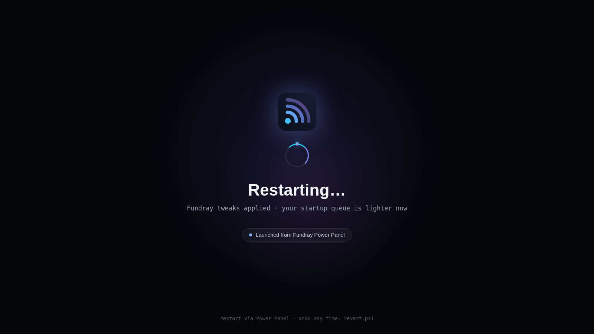
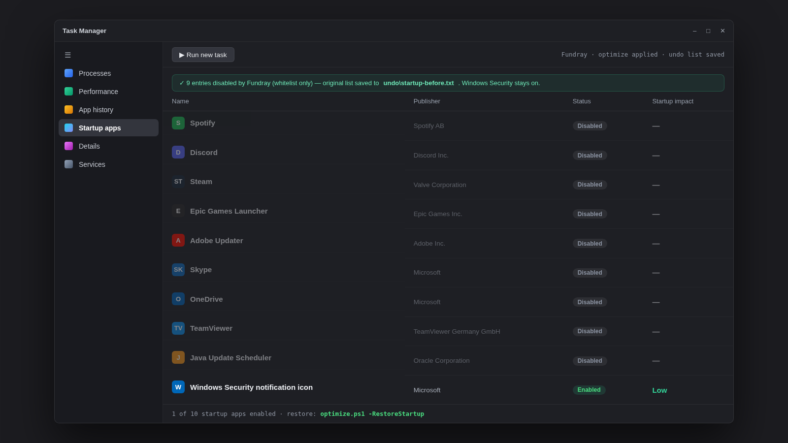
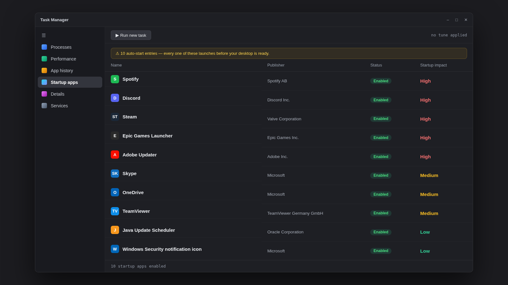
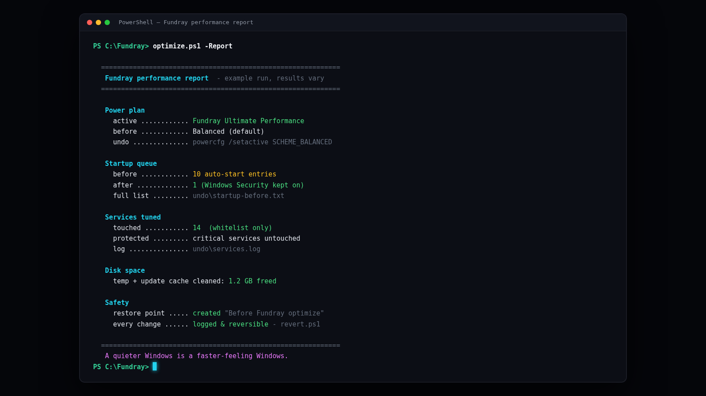

Run install.bat once. Reboot. Your laptop, reborn.
This is the honest tour of what Fundray actually does after the installer finishes: a new restart moment, a Power Panel you will actually use, a startup queue that stops fighting you, and a report showing exactly what changed. Everything on this page is reversible with one script.
The new restart moment
Every Windows restart feels like an apology. Fundray's Power Panel makes it feel like a launch sequence: one dark screen, one spinner, and your freshly tuned machine comes back with a lighter startup queue.

powerpanel.ps1 — the same window also handles Shut down, Sleep, Sign out and Lock.
The startup queue, before and after
Drag the slider. Left: the auto-start pile-up a normal laptop collects — every entry
launches before your desktop is ready. Right: after optimize.ps1, only what
matters keeps starting automatically, and Windows Security is always left on.


Illustrative example built from a typical tune run — your queue,
publishers and impact ratings are your own. Fundray saves the untouched original list to
undo\startup-before.txt, and optimize.ps1 -RestoreStartup puts
every entry back.
A report you can actually read
No mystery tweaks. When the optimizer finishes, it tells you what changed, what was freed, and the exact command to undo each part.

The rest of the tour
The other things waiting for you after install — click any card to open the full screenshot.


What happens when you run install.bat
Seven steps, zero mysteries. This is the exact sequence — and the exact way out of every one of them.
- 1
A restore point, first
Before anything is touched, the installer creates the "Before Fundray" checkpoint. No checkpoint, no tweaks.
- 2
The startup queue gets honest
Every auto-start entry is listed, the safe ones are disabled, and the untouched original list is saved to
undo\startup-before.txt. - 3
Services go quiet
Whitelist-only tuning: 14 known-safe services on a typical run, critical services protected by a hard list, everything logged to
undo\services.log. - 4
The power plan grows up
Balanced is replaced with High or Ultimate Performance — fewer micro-stalls when you actually need speed. One
powercfgcommand undoes it. - 5
Temp and update caches get flushed
Freed space is printed in the report. Nothing outside temp and update cache locations is deleted.
- 6
The rebirth moment
Restart from the Power Panel. The Fundray restart screen appears, and your machine comes back with a lighter startup queue.
- 7
The undo log is yours
Every change above is logged and reversed by
revert.ps1— the one-click way back to exactly how it was.
Your laptop is one reboot away
Download, verify the SHA256 checksum, run install.bat — and let the restore point catch you.